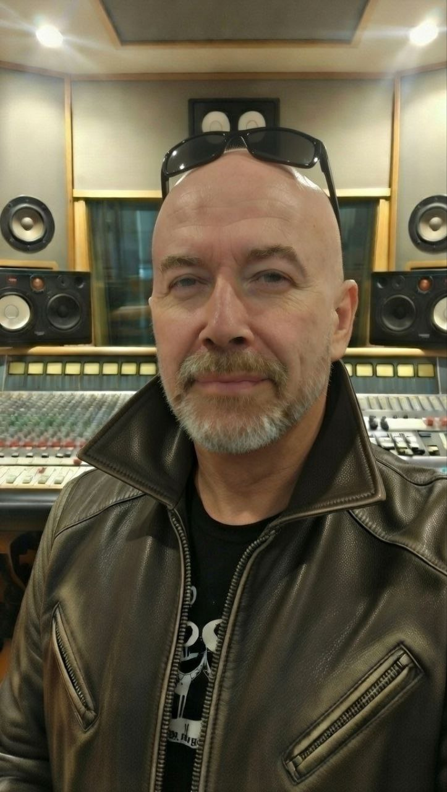

About DJ Grand Daddy
The Sonic Therapy Music Channel

Visionary Artist
Musician • Visual Creator • AI Prompt Designer • Aesthetician
DJ Grand Daddy is a multidisciplinary visionary, blending cutting-edge technology with artistic expression to create immersive sonic and visual experiences that transcend traditional boundaries.
Exploring the Digital Divide
Where Sound is the Cure
DJ Grand Daddy is a visionary electronic music producer and artist, crafting immersive sonic experiences that bridge the gap between the digital and the emotional. Through The Sonic Therapy Music Channel, he explores diverse electronic genres, from dark cyberpunk soundscapes to uplifting trance anthems.
Musical Journey
Specializing in cutting-edge electronic music production, DJ Grand Daddy creates high-fidelity audio experiences across multiple genres:
- Cyberpunk & Dark Synth: Futuristic, dystopian soundscapes with Terminator-style industrial elements
- Trance & Dreamwave: Uplifting vocal trance, cathedral energy, and hypnotic ambient compositions
- Synthwave & Retrowave: Neon-soaked ambient music perfect for focus and relaxation
- Dark Techno & Industrial: Hard-hitting bass, aggressive neurofunk, and brutal techno anthems
- Cinematic Pop & R&B: Emotional ballads and dark pop productions featuring vocalist Sonja
Collaborations
DJ Grand Daddy frequently collaborates with vocalist Sonja, creating powerful tracks that blend electronic production with emotive vocals, spanning from dark pop anthems like "Prisoner" and "Porcelain Lies" to epic trance productions. He also works with Panzerkraft, a producer specializing in heavy industrial bass and dark techno, delivering intense subwoofer-shaking experiences in tracks like "Panzerkraft - Heavy Industrial Bass Mix" and "PANZERKRAFT vs THE BEAST".
The Vision
The Sonic Therapy Music Channel is more than just music, it's a therapeutic journey through sound. Each production is crafted in stunning 4K visual quality, combining cinematic visuals with high-fidelity audio to create an immersive experience that heals, energizes, and inspires.